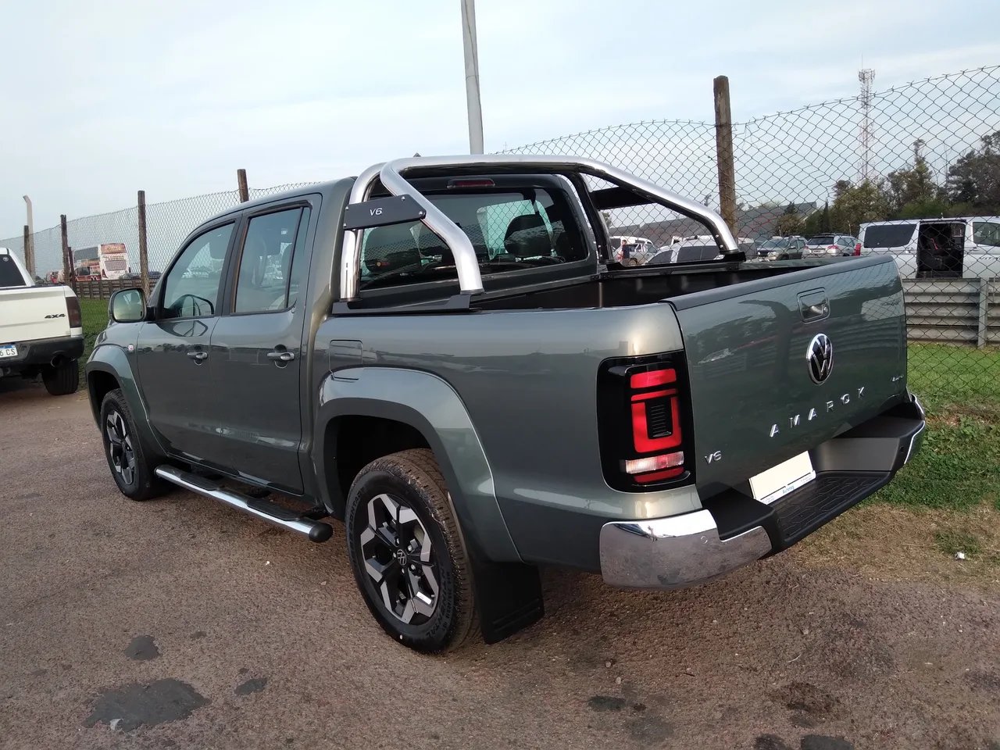

▲ 폭스바겐 아마록 하이라인 V6. W600은 이 차를 기반으로 월킨쇼가 손을 댄 스포츠트럭이다 ⓒ Just a Man, Wikimedia Commons (CC BY 4.0)
미국 자동차 매체 카스쿠프스(Carscoops)에 따르면 호주 튜닝 브랜드 월킨쇼가 만든 폭스바겐 아마록 W600이 호주에서 9만 1,990호주달러(약 6,410만 원)부터 판매되기 시작했다. 같은 시장에서 9만 690호주달러에 팔리는 포드 레인저 랩터보다 오히려 비싼 가격이다. 문제는 엔진이다. W600의 3.0L V6 터보디젤은 247마력으로 기존 아마록과 동일해, 392마력의 레인저 랩터에 크게 못 미친다.
1. 출력 경쟁이 아니라 고급화 경쟁
W600이 레인저 랩터를 정면으로 겨냥한 경쟁 모델이 아니라는 점이 핵심이다. 월킨쇼는 오프로드 성능 대신 온로드 주행 질감에 집중해, 도로 주행에 최적화된 서스펜션 세팅과 미쉐린 타이어, 가죽 시트 등 고급 사양을 대거 적용했다. 즉 W600은 험로 주파 능력을 겨루는 랩터의 대항마가 아니라, 픽업트럭 차체에 세단급 편의사양을 얹은 '럭셔리 픽업'을 표방하는 셈이다. 출력이 낮은데도 가격을 더 높게 책정할 수 있었던 배경이다.
2. 다음 단계는 출력 업그레이드일까
다만 월킨쇼 측은 향후 성능 업그레이드 버전과 오프로드 특화 모델을 추가할 가능성을 시사했다. 현재의 W600이 고급화에 초점을 맞춘 1단계 제품이라면, 후속 라인업에서는 실제로 랩터급 출력에 도전하는 버전이 나올 수 있다는 의미다. 호주 픽업트럭 튜닝 시장에서 럭셔리와 퍼포먼스 두 갈래 전략을 동시에 노리는 모양새다.

▲ 아마록 하이라인 페이스리프트 측후면. W600은 이 기반 모델에 월킨쇼의 고급화 사양을 더했다 ⓒ Just a Man, Wikimedia Commons (CC BY 4.0)
3. 호주 픽업트럭 튜닝 시장이라는 특수성
호주는 유독 픽업트럭 애프터마켓 튜닝 문화가 발달한 시장으로 꼽힌다. 광활한 국토와 오프로드 레저 문화, 상대적으로 느슨한 개조 규제가 맞물리며 월킨쇼 같은 전문 튜너들이 완성차 업체와 공식 협업 형태로 튜닝 모델을 내놓는 사례가 흔하다. W600 역시 비공식 애프터마켓 개조가 아니라 폭스바겐 공식 딜러망을 통해 판매되는 정식 라인업이라는 점에서, 국내에서 흔히 보는 사제 튜닝과는 성격이 다르다.